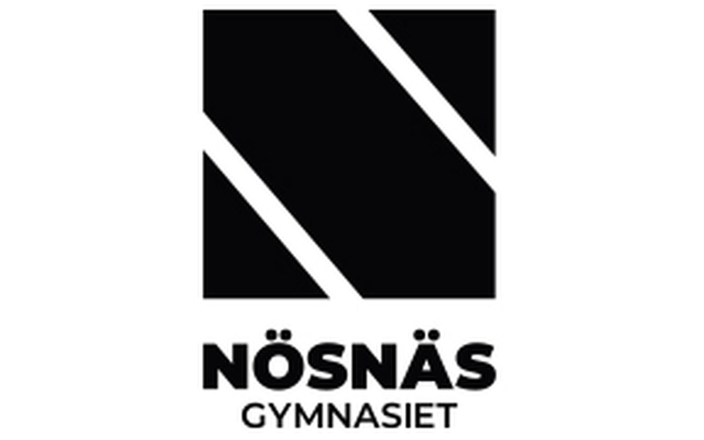

Skapa lugn
Aktiviteterna är utformade för att vara rogivande och ge en känsla av kontroll i en situation där barnet annars har lite att säga till om.
Litet spelrum skapar stora leender

Att göra tiden på sjukhus roligare för de små som vi bryr oss om!
Vår ide föddes ur en önskan att göra sjukhusvistelsen lite lättare för barn. Vi har skapat en spellåda fylld med omsorg ett pussel för koncentrationen, ett memory för skärpa, en målarbok för att bearbeta intryck och ett litet brädspel för gemenskap. Varje komponent är vald för att inte bara roa, utan också för att hjälpa barnet att lära sig något nytt och känna sig tryggare i vårdmiljön. Det är en liten låda med en stor ambition: att göra skillnad för de allra minsta patienterna.
Vi har fyra huvuddelar i våran spelbox:
Integer eu ante ornare amet commetus vestibulum blandit integer in curae ac faucibus integer non. Adipiscing cubilia elementum integer. Integer eu ante ornare amet commetus.

Aktiviteterna är utformade för att vara rogivande och ge en känsla av kontroll i en situation där barnet annars har lite att säga till om.

Gömda i leken finns pedagogiska element som hjälper barnet att förstå sin omgivning och bearbeta nya intryck.

Från fokuserad koncentration till fri kreativitet.